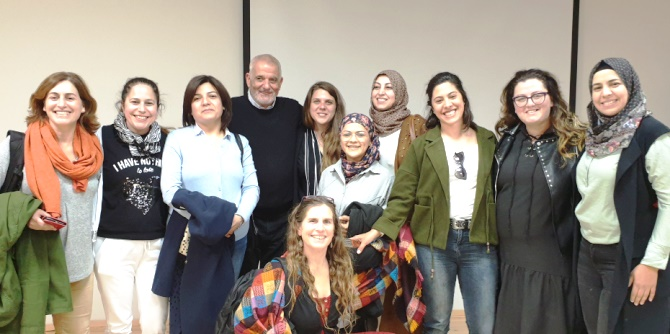

Daphni Leef’s meeting with the faculty and fellows of the Mandel Center for Leadership in the North opened with the documentary movie Before My Feet Touch the Ground, which she directed. Selected to open the DocAviv film festival in 2017, the movie documents the emergence of the social protest in Israel in 2011 and its struggle to lower the cost of living and change the distribution of resources in Israel. The film combines video reportage and interviews that provide a record of the days before and during the protest, and reveal the planning and lack of planning as the protest progressed.
Daphni Leef, a social activist and one of the leaders of Israel’s social protest in 2011, uses the movie to give a personal reckoning of the events that shook Israeli society at that time, and to come to terms with her own issues.
After the movie, Daphni spoke about how she coped during the days, months, and years after the protest, when she became a prominent public figure and a household name in Israel because of her social activism. She answered questions from the fellows candidly, and with great openness, describing the criticism she faced due to the choices she made and continues to make, as a social entrepreneur grappling with social issues and leadership issues.
The encounter was inspirational for the fellows, and raised many questions about the nature of protests and revolutions, of success and failure, and of acts of leadership.

{kind=link}